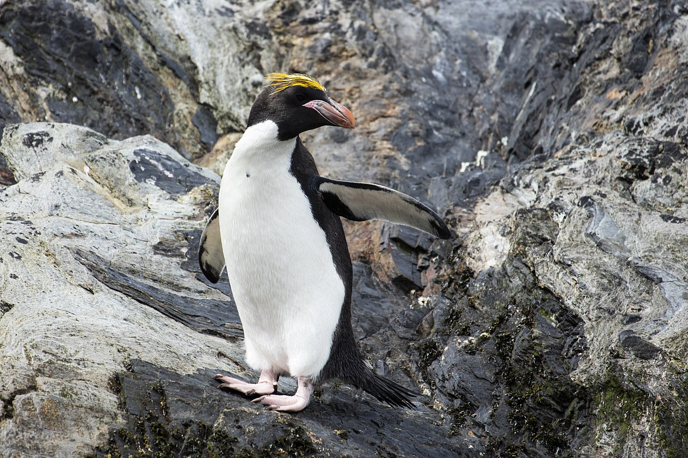

Machias Macaroni Penguin
The macaroni penguin (Eudyptes chrysolophus) is a species of penguin found from the Subantarctic to the Antarctic Peninsula. One of six species of crested penguin, it is very closely related to the royal penguin, and some authorities consider the two to be a single species. It bears a distinctive yellow crest, and the face and upperparts are black and sharply delineated from the white underparts.
- They can dive anywhere between 15 – 70 metres and can hold their breath for up to three minutes.
- Macaroni’s can hop as well as waddle.
- A Macaroni breeding ground can host anywhere between 100,000 to 3,000,000 breeding couples.
- Penguins have very distinctive calls and can recognise each other among a whole bunch of noisy penguins…with Macaronis being the loudest.

link to index.html